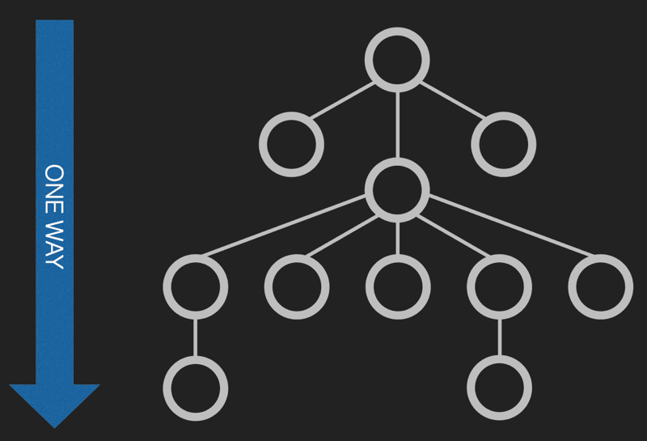

React
Web UI the Right Way ?
aka Kinda the V of MVC
aka Functional Web UIs
Khalid Jebbari
aka DjebbZ, @DjebbZ
November 27th, 2014
hosted by Palo IT
Disclaimer
Talk greatly inspired by this video from React's Lead developer.
Plan
Design of React :
- Separation of concerns
- Component oriented
- Rendering concept
Going further (if time permits)
Best practice
Separate template from view logic (Handlebars, Angular.js template, all HTML-like languages VS Backbone View, Angular.js directive, all display-oriented JS code)
Wait !?
Don't they both display the UI ?
Display logic and markup are highly cohesive.
Separation of concers :
“Reduce coupling, increase cohesion”
Templates separate technologies, not concerns. And they're underpowered.
- pseudo-programming language
- lacks some context (behavior)
- poor reusability
React
Hello World example
A better syntax : JSX
Question :
In programming, what's reusable ?
Functions...
... Pure functions !
Ce serait bien si...
... on avait des composants graphiques réutilisables, basées sur les principes des fonctions pures, hein ?
Hein ouais ce serait bien ?
Hein ?
Component <=> Function
React components are just
idempotent functions.
They describe the UI at any point in time,
just like the server-rendered page.
Managing UI state is hard
Server/client state, user input, complex interactions, etc.
Managing state in programming is hard
My second remark is that our intellectual powers are rather geared to master static relations and that our powers to visualize processes evolving in time are relatively poorly developed. For that reason we should do (as wise programmers aware of our limitations) our utmost to shorten the conceptual gap between the static program and the dynamic process, to make the correspondence between the program (spread out in text space) and the process (spread out in time) as trivial as possible.
E. W. Dijkstra, 1968
In the 90s, it was easier
Just refresh the page when data changes !
React Data-flow
Data flows from top to bottom. Easy.
Everything is declarative
Re-rendering ? Expensive and
inefficient !
“And doesn't it mess up form fields and scroll position ?”
Indeed, the DOM is slow.
Meet the virtual DOM.
On every update, React :
- builds a new virtual DOM subtree
- ... diffs it with the old one
- ... compute the minial set of DOM mutations and puts them in a queue
- ... and batch executes all updates
Diff is fast because :
- it's working on pure Javascript data structures, not the slow DOM
- the algorithm used is O(n)
- you can easily short-circuit it for even better performance
Virtual DOM enables :
- unit testable components
- rendering in Node.js
- the Holy Grail
- rendering SVG, VML and Canvas
React in the real world
Used by numerous and big names on the web. (Facebook, Instagram, AirBnB, Khan Academy, Mozilla, ...). It's solid.
Using it since 11 months. All good
And the other JS libs ?
Is React perfect ?
No. Nothing is perfect :
- Lacks CSS management to make real components.
- Some overlap with WebComponents
- JSX is a nice syntax, but needs tooling
- No full-stack front-end framework using React
But React is very good
Stateless over stateful
Explicit state management over uncontrolled mutability
Simple data-flow over unpredictable cascading changes
Components really reusable
Not a full stack framework :)
Questions ?
Images courtesy of @bobylito